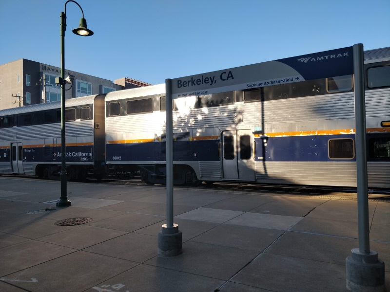
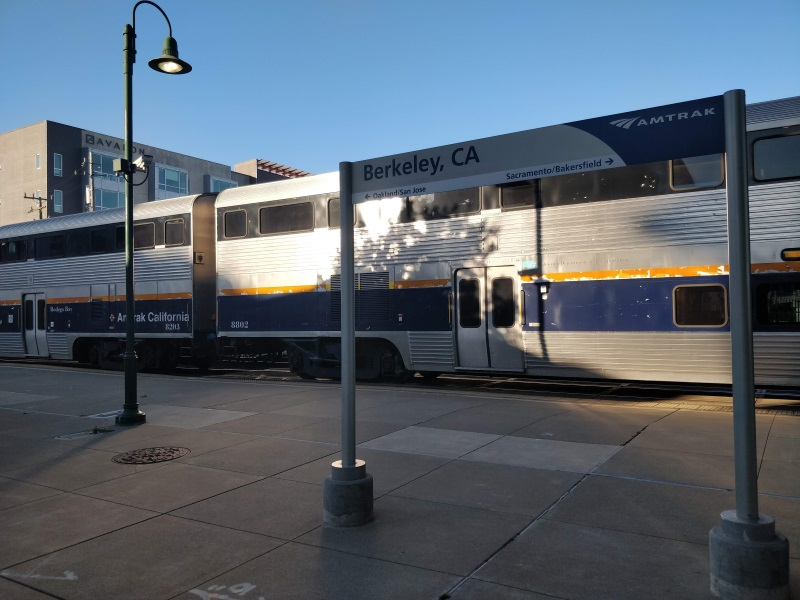

The view towards the train stairwell
COMPSCI 194-26: Computational Photography & Computer Vision
Professors Alexei Efros & Angjoo Kanazawa
October 11th, 2021
Nick Kisel
Last weekend, I went home to Sacramento. That means I took a train and enjoyed my surroundings as I traversed the 100 mile journey. Along the way, I snapped the following photos, and made mosaics out of them:
The view towards the train stairwell

The view towards the aisle
Well, before you see the results, let's explain how this works.
I selected eight corresponding points on each image I took; each
of those eight points represent the location of the same objects
as they change position based on the rotation of the camera.
These corresponding points allow us to compute the homography
of an image, which enables the transformations required for image
stitching. In reality, just four points are required for homography,
but additional points provide higher accuracy if well-placed.
I used the following matrix to estimate my homography matrices:

Then, plugging in the (x, y) pairs for each of my selected points below, I calculated the most likely entries of the 3x3 homography matrix via least squares.
Eight input points around rectangles in the train.
A mosaic of the two extends the view using just one image. As you can see, the rightmost photo is stretched such that its points align onto the left photo's points, which allows the two photos to extend each other.

A view of Scenic Blvd. going eastward to campus.

Going westward to downtown.

Eight input points around the sidewalk

A mosaic of the two.
 

Berkeley's train station with a train in-station!

Eight input points along the train.
A mosaic of the two.

Martinez's train station from my train.

Eight input points along the ouside of the station.
A mosaic of the two.
Another possible application of homography is the extraction of non-square
textures from the photo's environment into a square (or other shape of your choosing).
By nature of matrix transformations, the opposite can also be done to project
a texture onto some object in a photo.
In this case, I grabbed the train map from the wall and the textured sidewalk.

What's on that train poster?
Ah, yes, very clear.
Let's feel the bumps of the pedestrian crossing.

Ah, yes, so ADA-accessible.
Overall, the procedure to automatically stitch two images is as follows:
Harris points on the left side.
Harris points on the right side.
harris.py::harris_corners on my image outputs every Harris corner over five pixels from any image border. Harris points on the left side.
After point suppression
(Zoomed out 80x80 patch for context)
40x40 local patch
Gaussian blurred down to 8x8
The matched patches, numbered.
The autostitched result
The matched patches, numbered.
Martinez
The matched patches, numbered.
Scenic Boulevard
The matched patches, numbered.
The Carquinez bridge
Lots of great corners on the train!
Looks like I took a wrong turn. Anyone know how to get from "Benley" to Berkeley?
The matched patches, numbered.
The sky above my house.